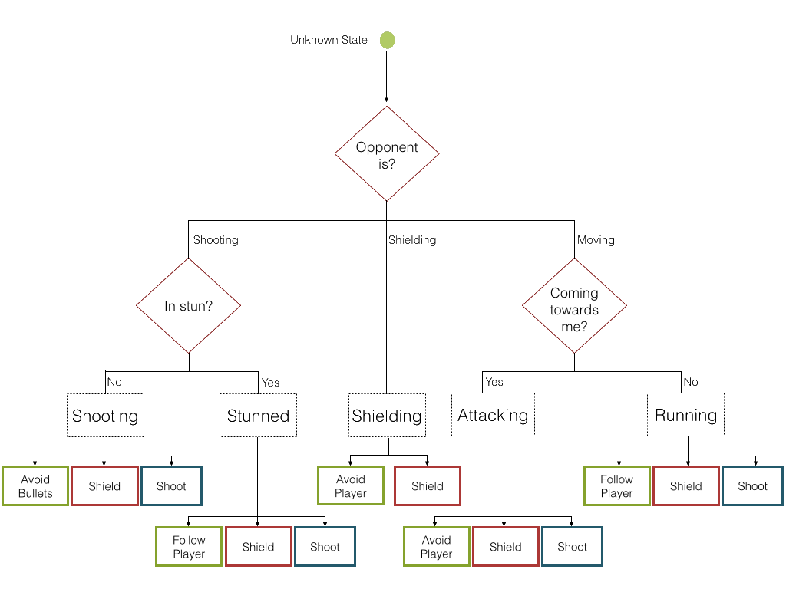

I started at Microsoft in 2017 as a Software Engineer in the Core group.
Before that, I interned with Cougaar Software,
working
on a distributed robotics network, and Facebook, working on their distributed
blob storage team.
school
I graduated from University of Maryland, Baltimore County in
December, 2016 with a
BS
in Computer Science.
I really enjoyed my artificial intelligence, robotics, hadoop, and operating systems classes.
As a final project for my AI class, I worked with a small team on implementing the classic board
game checkers in Java with Swing and developing an AI to play against. To pick the ideal move, an
implementation of the minimax theorm was used to algorithmically minimize the worst case scenario.
To allow the computer to manage the huge number of available moves, the alpha beta pruning technique
was added. This technique prevents the computer from exploring movement options that will never be
considered because the optimal move has already been discovered. Download the game here or watch me play it below.
real time artificial intelligence
Starting recently, I built a simple two dimensional shooting game. The player can move up and
down
as
well as shoot and shield. The objective of this project is to practice implementing a small
scale
version of a real
time video game AI. Currently, the AI consists of a state
detection mechanism with several pre-programmed maneuvers to switch contextually based on the
situation.

You can download it or you can watch a video of me
playing below:
I plan on expanding this project into neural
networks in the near future.
decision tree
A few years ago, I was taking a self-led class. Over the course of the year, I was to
develop one application that I was proud of to present to the class.
The result was a computer that plays Connect
Four. Using a data structure that I
based on the minimax theorem, the computer
could
look a certain number (user defined)
of moves into the future. Using its knowledge of the future, it determined the best
move by deciding which move is most likely to lead to the desired board position.
When deciding, it takes into account the best moves for itself, as well as the best
moves for its opponent. The end result is a computer that's pretty hard to beat!
I was one of the founding members of
UMBC’s robotics club, Retriever
Robotics.
I
have been one of the principle programmers since the club's inception and was also the treasurer
for
the
2014-2015 academic year.
We work on competition robots for VEX U. In the video
below, you can see our robots in blue beating the College of Southern Maryland in a VEX Toss Up match
last year. The robot I spent the most time working on is the one that ends up doing the
pull-up near the end.
boggle
I made the game boggle in java as a way to
experiment
with different data structures.
After trying multiple different ways of storing the dictionary to check the words against,
I decided to go with a trie because it seemed to
preform
at least as fast as a hashtable with a significantly smaller memory footprint. Try it out here.
As a part of a group project in the spring of 2014, my boggle game was turned into an Android
app.
My work on the project was mostly the art and the back-end of the app.
Here's the video we turned to demonstrate the game, which you can also download
(if you have an Android phone):
I also took it upon myself to try to figure out how many words were on a given 5x5 boggle board.
To do that, there has to be an algorithm that looks at each tile and recursively develops a list
of
strings that could be made starting at that tile.
To do this efficiently, I added a method to the trie that checks if a given string is a stem for
any
words. If and only if the given string has the
possibility of making a word does the algorithm continue to run.
Because of this optimization, I run it and it instantly spits out the result:
 My work on the project was mostly the art and the back-end of the app.
My work on the project was mostly the art and the back-end of the app.